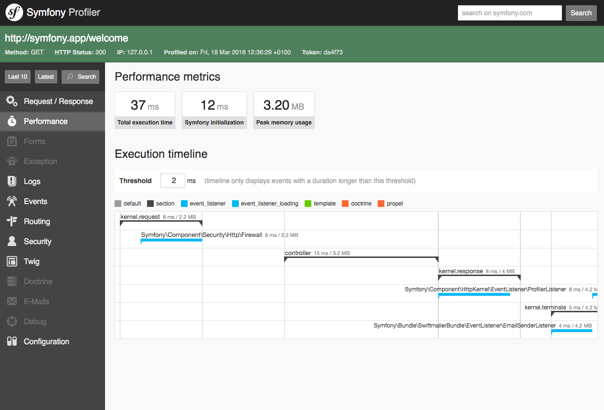

Profiler¶
The profiler is a powerful development tool that gives detailed information about the execution of any request. Never enable the profiler in production environments as it will lead to major security vulnerabilities in your project.
Installation¶
In applications using Symfony Flex, run this command to
install the profiler Symfony pack before using it:
1 | $ composer require --dev symfony/profiler-pack
|
Now, browse any page of your application in the development environment to let the profiler collect information. Then, click on any element of the debug toolbar injected at the bottom of your pages to open the web interface of the Symfony Profiler, which will look like this:
Note
The debug toolbar is only injected into HTML responses. For other kinds of
contents (e.g. JSON responses in API requests) the profiler URL is available
in the X-Debug-Token-Link HTTP response header. Browse the /_profiler
URL to see all profiles.
Accessing Profiling Data Programmatically¶
Most of the times, the profiler information is accessed and analyzed using its
web-based interface. However, you can also retrieve profiling information
programmatically thanks to the methods provided by the profiler service.
When the response object is available, use the
loadProfileFromResponse()
method to access to its associated profile:
// ... $profiler is the 'profiler' service
$profile = $profiler->loadProfileFromResponse($response);
When the profiler stores data about a request, it also associates a token with it;
this token is available in the X-Debug-Token HTTP header of the response.
Using this token, you can access the profile of any past response thanks to the
loadProfile() method:
$token = $response->headers->get('X-Debug-Token');
$profile = $profiler->loadProfile($token);
Tip
When the profiler is enabled but not the web debug toolbar, inspect the page
with your browser’s developer tools to get the value of the X-Debug-Token
HTTP header.
The profiler service also provides the
find() method to
look for tokens based on some criteria:
// gets the latest 10 tokens
$tokens = $profiler->find('', '', 10, '', '', '');
// gets the latest 10 tokens for all URL containing /admin/
$tokens = $profiler->find('', '/admin/', 10, '', '', '');
// gets the latest 10 tokens for local POST requests
$tokens = $profiler->find('127.0.0.1', '', 10, 'POST', '', '');
// gets the latest 10 tokens for requests that happened between 2 and 4 days ago
$tokens = $profiler->find('', '', 10, '', '4 days ago', '2 days ago');
Data Collectors¶
The profiler gets its information using some services called “data collectors”. Symfony comes with several collectors that get information about the request, the logger, the routing, the cache, etc.
Run this command to get the list of collectors actually enabled in your app:
1 | $ php bin/console debug:container --tag=data_collector
|
You can also create your own data collector to store any data generated by your app and display it in the debug toolbar and the profiler web interface.
Timing the Execution of the Application¶
If you want to measure the time some tasks take in your application, there’s no need to create a custom data collector. Instead, use the built-in utilities to profile Symfony applications.
Tip
Consider using a professional profiler such as Blackfire to measure and analyze the execution of your application in detail.
Enabling the Profiler Conditionally¶
Caution
The possibility to use a matcher to enable the profiler conditionally was removed in Symfony 4.0.
Symfony Profiler cannot be enabled/disabled conditionally using matchers, because
that feature was removed in Symfony 4.0. However, you can use the enable()
and disable() methods of the Profiler
class in your controllers to manage the profiler programmatically:
use Symfony\Component\HttpKernel\Profiler\Profiler;
// ...
class DefaultController
{
// ...
public function someMethod(?Profiler $profiler)
{
// $profiler won't be set if your environment doesn't have the profiler (like prod, by default)
if (null !== $profiler) {
// if it exists, disable the profiler for this particular controller action
$profiler->disable();
}
// ...
}
}
In order for the profiler to be injected into your controller you need to
create an alias pointing to the existing profiler service:
- YAML
1 2 3
# config/services_dev.yaml services: Symfony\Component\HttpKernel\Profiler\Profiler: '@profiler'
- XML
1 2 3 4 5 6 7 8 9 10 11
<!-- config/services_dev.xml --> <?xml version="1.0" encoding="UTF-8" ?> <container xmlns="http://symfony.com/schema/dic/services" xmlns:xsi="http://www.w3.org/2001/XMLSchema-instance" xsi:schemaLocation="http://symfony.com/schema/dic/services https://symfony.com/schema/dic/services/services-1.0.xsd"> <services> <service id="Symfony\Component\HttpKernel\Profiler\Profiler" alias="profiler"/> </services> </container>
- PHP
1 2 3 4
// config/services_dev.php use Symfony\Component\HttpKernel\Profiler\Profiler; $container->setAlias(Profiler::class, 'profiler');
Updating the Web Debug Toolbar After AJAX Requests¶
Single-page applications (SPA) are web applications that interact with the user by dynamically rewriting the current page rather than loading entire new pages from a server.
By default, the debug toolbar displays the information of the initial page load
and doesn’t refresh after each AJAX request. However, you can set the
Symfony-Debug-Toolbar-Replace header to a value of 1 in the response to
the AJAX request to force the refresh of the toolbar:
$response->headers->set('Symfony-Debug-Toolbar-Replace', 1);
Ideally this header should only be set during development and not for production. To do that, create an event subscriber and listen to the kernel.response event:
use Symfony\Component\HttpKernel\Event\ResponseEvent;
// ...
public function onKernelResponse(ResponseEvent $event)
{
if (!$this->getKernel()->isDebug()) {
return;
}
$request = $event->getRequest();
if (!$request->isXmlHttpRequest()) {
return;
}
$response = $event->getResponse();
$response->headers->set('Symfony-Debug-Toolbar-Replace', 1);
}